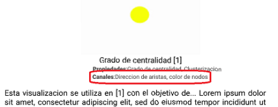

<body style="margin-top:3%">


    <section>

        <div class="card centerCard" style='padding-bottom: 0%;color:white'>
            <h3 style="padding:6% 0% 0 3%"><b>Canales</b></h3>
            <div style="margin-left: 3%; display:flex">
                <hr style="width: 30%;height: 4px;color:black " />
            </div>
            <p style='padding: 0 3% 0 3%; text-align: justify;'>
                <b>Los canales</b> de una visualización <b>son los diferentes elementos en esta que te aportan
                    información
                    mediante una ayuda audio-visual y te permiten identificar propiedades</b>[1] especificas en los
                gráficos,
                entre estas pueden encontrarse: una flecha en una arista para demostrar direccionalidad o una variación
                en el grosor para dar a entender que algunos flujos son mayores que otros, etc...
            </p>
            <div class="row" style="margin: 0 0%; padding-bottom: 2%; text-align: center;">
                <div class="col-6">
                    
                    <div class="row">
                        <i>
                            <p><b>Canales</b>
                            </p>
                        </i>
                    </div>
                </div>
                <div class="col-3">
                    
                    <div class="row">
                        <i>
                            <p><b>Ejemplo 1</b>
                            </p>
                        </i>
                    </div>
                </div>
                <div class="col-3">
                    
                    <div class="row">
                        <i>
                            <p><b>Ejemplo 2</b>
                            </p>
                        </i>
                    </div>
                </div>
            </div>
            <div style="display:flex">
                <hr style="margin-left:3%;color:rgb(0, 0, 0); height: 4px;background-color:white ;" />
            </div>
            <div>
                <a [routerLink]="['/conceptos']">
                    <i class="fas fa-long-arrow-alt-left fa-2x"
                        style="border-radius: 8px;padding:3px 8px;margin-left: 3%;margin-bottom: 5%;color:black;background-color: white;"></i>
                </a>
            </div>
        </div>


    </section>
    <!--   #############  INFORMACIONES POPUP   ######### -->

</body>